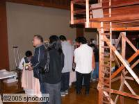
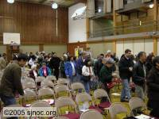
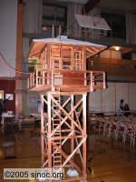
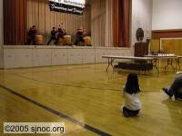

Democracy and Dissent
25th Annual Day of Remembrance (DoR) in San Jose
Richard Katsuda of Nikkei for Civil Rights and Redress-Los Angeles and a founding member of NOC spoke about the history of Day Remembrance and the struggle for Redress and Reparations. Representative Mike Honda spoke about the need for individuals to speak up when they see their government repeating the mistakes of the past. Grace Shimizu of the Japanese Peruvian Oral History Project spoke about the Assembly of Wartime Internment and Relocation of Civilians that was held on April 8 and 9.
Imam Tahir Anwar of the South Bay Islamic Association and Imam Zaid
Shakir of the Zaytuna Institute spoke of the backlash from 9/11 and the how
this event affected their communities. They spoke of how the Nikkei
community stepped in and spoke out against the detentions and arrests of
Muslims and Arabs. Japanese Americans remembered what had happened to the
Japanese people living on the West Coast during WWII and deemed that the
same fate should not befall
the Muslim and Arab peoples. They both thanked the Nikkei community for
supporting
their peoples.Barbara Muramoto and one of her students played two beautiful
selections on the
koto accompanied by Dick Matsueda on the shakuhachi and the San Jose Taiko
concluded
the evening by playing several rousing pieces.
 |
 | ||
|  | |||
|  | |||
|  |
| © Copyright 2005 SJNOC.org Web site design by: Gaylonn Designs |